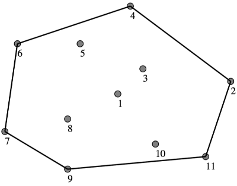
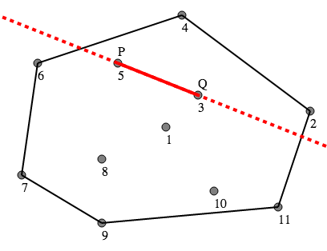
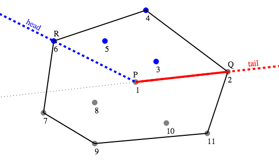
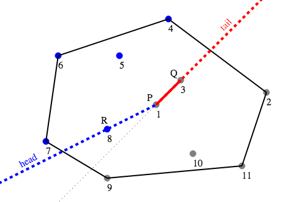

If there is only one tree in the forest, then obviously there is no need to cut anything down, and the answer for that tree is zero.
Otherwise, let's assume we have cut down some trees so that a given point P is on the boundary. If we follow the boundary clockwise from P, we will reach another boundary point Q. Imagine we are standing at P and looking along the boundary line towards Q. There can be no trees still standing to the left of this line, otherwise this would not be the boundary.
This suggests an algorithm for determining the minimum number of trees to cut down — for each point P, try each other point as a candidate for the next point around the boundary, Q; then check how many points lie on the left of the line PQ. The size of the smallest of those sets of points is the best answer:
For each point P
Let M = N-1
For each point Q ≠ P
Let Temp = 0
For each point R ≠ P, Q
If R is to the left of the line PQ
Temp = Temp + 1
If Temp < M
M = Temp
Output M
Cutting down all the trees to the left of PQ for some Q is sufficient to produce a valid solution, because no matter where the remaining trees are, P will be on the boundary. We can also be sure that this method will find the minimal solution, since whatever the minimal solution is, it will have some point Q which is the next along the boundary, and we have cut down the minimal number of trees to make that so.
Consider the case in figure 1. Point #4 is already on the boundary, with Q equal to point #2, and we can see that there are no points to the left of the line PQ that we need to cut down, so the answer for point #4 is 0.
However, if P is point #5, then P is not already on the boundary. When we choose Q to be point #3, as in Figure 2, we find that there are two points to the left of the line PQ: point #2 and point #4. Cutting down those two trees will put P on the boundary.
However, this is not the minimal solution — when we try point #2 for Q, we will find a better solution, since only point #4 will need to be cut down.
This algorithm takes time O(N^3). But we can do better than this.
For each new point P, build an array S containing all the other points. Sort S by the angle of the line from P to that point. Now, we can try each possible point Q ≠ P by iterating through S, which gives an ordering of the points which moves counter-clockwise around P.
The advantage of this method is that for any choice of Q, all the points which lie to the left of the line PQ will occur after Q in the list S. So we can represent our current choice of Q and the set of points which lie to the left of PQ together as a "window" of points, implemented as two pointers into S — a "tail" pointer which points to Q, and a "head" pointer which points to the last point after Q which lies to the left of PQ. We call this point R in the diagrams.
In figure 3, we can see the state of this window for P = #1, Q = #2, R = #6. The tail of the window (in red) is at point #2, and the head of the window (in blue) is at point #6. The points #3, #4, #5, #6 are the ones which are to the left of PQ, so this choice of Q gives us a candidate solution which requires 4 trees to be cut down.
To update the position of the window for the next choice of Q, we need to do two things — move the tail ahead one point to the new choice of Q, and scan forward from the current position of the head pointer to find the new choice for R. In Figure 4, we can see that the tail has moved to point #3, and the head has moved to point #8. We now have a candidate solution which requires cutting down 5 trees (#4, #5, #6, #7, #8).
Since the tail of the window iterates through each point once, and the head of the window iterates through each point at most twice, this part of the algorithm takes O(N) time for each choice of P.
Sorting the points takes O(N log N) time for each choice of P, so in total this solution takes O(N^2 log N) time.
There are a few things to be careful of when implementing this algorithm:
Burunduk1, who won round 1A and had the fastest time for this problem, used an implementation of this algorithm.